All three of the main browser rendering engines now support MathML. Unfortunately, they each have multiple shortcomings in math rendering. The MathML Core specification also has some issues.
The table below is an attempt to show all the current major rendering issues in one place. It describes issues, gives an example of the relevant MathML source code and shows screenshots of all three browser renderings as compared to LaTeX output.
The first eleven rows of this table come from Murray Sargent’s list of problems in MathML Core issue #229. I have paraphrased some of Murray's descriptions in my own words, but they are the same issues.
The math font in use is Latin Modern, unless noted otherwise.
These renderings differ from Temml output because Temml contains workarounds for most of these problems.
This table is a work in progress. I intend to keep it updated and I welcome suggestions for its improvement. MathML Core issue #320 would be a good forum for discussion of this table.
Key for Status Column
C: Chromium (Chrome, Edge, etc.) issues
G: Gecko (Firefox) issues
W: WebKit (Safari) issues
S: MathML Core Specification issues
F: Font issues
*: No workaround exists in Temml
By Ron Kok. Last updated 9 Apr 2026.
| Name |
|
Description | Issue | LaTeX | Chromium | Gecko | WebKit | Your browser | MathML | Comment | |
|---|---|---|---|---|---|---|---|---|---|---|---|
| 1 | Display mode | resolved | <math display="block"> often didn't center the equation |
||||||||
| 2 | Supsub | CGWS* | Superscript and subscript vertical alignment should not vary with character height or descender depth. | 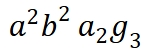 |
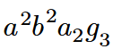 |
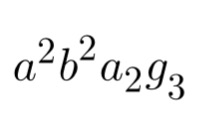 |
|
This issue contributes to radical height problems. See item 25. | |||
| 3 | Fraction padding | resolved? | Adjacent fractions should be separated by a small space. | 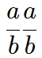 |
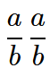 |
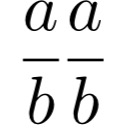 |
|
Per TeXbook p. 150, fractions (except \cfrac) should get a 1.2 pt gap on either side. Chromium applies a 1px padding. | |||
| 4 | Operator spacing | CWS | 𝑎 sin 𝜃 needs a space before and after sin |
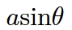 |
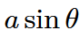 |
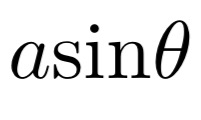 |
|
||||
| 5 | Short Parens | W* | |x| displays the delimiters too high | 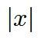 |
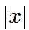 |
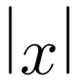 |
|
Shown with stretchy="true".Now fixed in Chromium (2025). Rendering has been good all along where stretchy="false". |
|||
| 6 | Radical alignment | C | √𝜋 displays the square root too low | 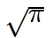 |
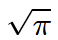 |
|
|||||
| 7 | Matrix parens | CGWS | Parentheses around matrices are too large | 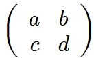 |
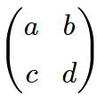 |
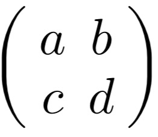 |
|
||||
| 8 | Unicode spaces | resolved? | Unicode spaces have incorrect widths. | 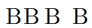 |
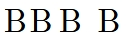 |
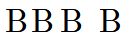 |
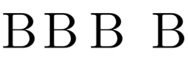 |
|
I have been unable to reproduce Murray's problem. The spaces shown are U+200A (hair space), U+2009 (thin space), and U+2002 (en space). Also, U+2061 (apply function) has no advance distance. | ||
| 9 | Wide hat & tilde | C | \widehat and \widetilde do not stretch | 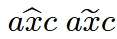 |
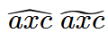 |
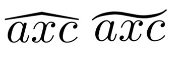 |
|
||||
| 10 | Integral | resolved | Integration symbol should be large in display mode | 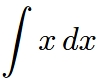 |
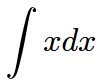 |
|
Now fixed in Chromium (2025) | ||||
| 11 | Fraction vinculum | resolved | Fraction vinculum was too wide in display mode | 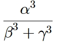 |
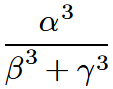 |
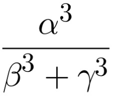 |
|
||||
| 12 | Misaligned delimiter | C | Delimiters in the base of a <msubsup> are misaligned |
#215 | 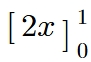 |
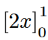 |
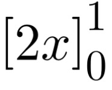 |
|
|||
| 13 | Primes | CWS | Prime vertical alignment is too high.. | #160 | 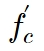 |
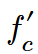 |
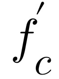 |
|
The browser should use an alternate glyph for ′, ″, etc. All math fonts have alternate glyphs. |
||
| 14 | Accents (A) | W | Accents placed too high | 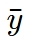 |
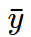 |
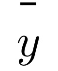 |
|
||||
| 15 | Accents (B) | CWS | Accents omit italic correction | 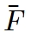 |
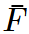 |
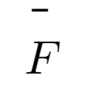 |
|
||||
| 16 | Accents (C) | CS | <mover> attribute accent=true sets accent a little too low. |
#301 | 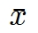 |
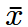 |
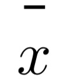 |
|
The other accents in this table work in Chromium because I did not use <mover> attribute accent=true. Instead, I set an explicit math-depth on the accent element. |
||
| 17 | \vec | CWS | The glyph that best matches TeX is a combining character, which renders too far left. | #311 | 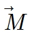 |
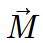 |
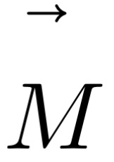 |
|
Shows character U+20D7 | ||
| 18 | Hat | CW* | Circumflex accent is not flattened in most math fonts. | #254 | 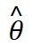 |
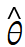 |
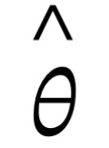 |
|
STIX TWO | ||
| Latin Modern is okay | |||||||||||
| 19 | Soft linebreaks | CWS* | Not supported | #127 | Gecko, when <semantics> and <annotation> are not used, treats the end of a top-level <mrow> as a soft line-break. It’s very handy. |
||||||
| 20 | Extensible arrows (A) | GW | Ignores CSS min-width |
#64 | |
Shown with style="min-width:4.0em" |
|||||
| 21 | Extensible arrows (B) | CGW | Ignores CSS text-align |
#120 | |
Shown with style="text-align: center" |
|||||
| 22 | Extensible arrows (C) | CSW* | Note placed too high in any font other than Latin Modern. | #121 | |
STIX TWO | |||||
| Latin Modern | |||||||||||
| 23 | Matrix Padding | CS | Default padding should be zero on both sides of a matrix. | |
|||||||
| 24 | Inconsistent cell height | G* | Cell height defined by differing criteria. | |
Chromium and WebKit set cell height by applying CSS padding to the ink. Gecko pads the line box. Math is shown with explicitly set 0.5ex top and bottom padding. |
||||||
| 25 | Radical height | CGWS* | Radicals are often too tall when the radicand has a (sub|super)script | |
A nicely sized surd is not available because (sub|super)scripts are not at the height expected by the font designer. Item 2 and lack of cramping both contribute. | ||||||
| 26 | Radical Degree | CW* | Degree placed too far left or right | #317 | |
Showing Latin Modern. It looks better with Cambria Math. | |||||
| 27 | Size 4 radicals | C* | Vinculum and surd are mis-aligned | |
|||||||
| 28 | End space | CG | Spaces written at the end of a <mtext> are trimmed |
|
Shown with 2 spaces in a <mtext>.This behavior conforms to MathML 2.0 section 2.4.6, but it seems weird. LaTeX \text{…} and HTML <span> don't do this. |
||||||
| 29 | \raise, \raisebox | CWS | Attribute voffset moves the ink but does not increase computed height |
#203 | |
Shown with "a" raised by 0.25em. | |||||
| 30 | \mathrm{N} | G | Improperly sets operator spacing on an <mi mathvariant="normal">. |
1816217 | |
||||||
| 31 | Script (1) | CGWS | Browser should distinguish between chancery and roundhand Unicode and render the appropriate glyph. | #271 | |
Showing STIX TWO font. Per Unicode 14+, characters in the range U+1D49C - U+1D4B5, Mathematical Script, can be either chancery glyphs () or roundhand glyphs (). Chancery character codes are appended by &FE00; and roundhand character codes are appended by &FE01;. |
|||||
| 32 | Script (2) | F | Some math fonts do not contain roundhand glyphs. | |
Showing Latin Modern, which does not contain roundhand glyphs. | ||||||
| 33 | Scriptscriptstyle | CW | Elements over-shrink in a deeply nested fraction or (sub|super)script. | |
Elements should not shrink beyond scriptscriptstyle. | ||||||
| 34 | Stretchy \middle | CW | Fails to stretch if form="infix" |
|
|||||||
| 35 | Hyphen-minus | CS | U+002D hyphen-minus in a <mo> should render as U+2212, minus sign. |
#70 | |
||||||
| 36 | Overlap | W | Elements are not rendered if CSS width = 0 |
|
|||||||
| 37 | Negative kern | W | Negative left margin not recognized on <mpadded> |
#132 | |||||||
| 38 | \boxed | CS | <menclose> not supported |
#245 | |
||||||
| 39 | \cancel | |
|||||||||
| 40 | \bcancel | |
|||||||||
| 41 | \xcancel | |
|||||||||
| 42 | \sout | |
|||||||||
| 43 | \angl, \angln | |
|||||||||
| 44 | Long division | |
|||||||||
| 45 | \cancelto | CWS | Not supported | #245 | |
||||||
| 46 | \phase | CWS | Not supported | #245 | |
||||||
| 47 | Paren padding | C* | Most stretchy delimiters add exessive padding | |
|||||||
| 48 |